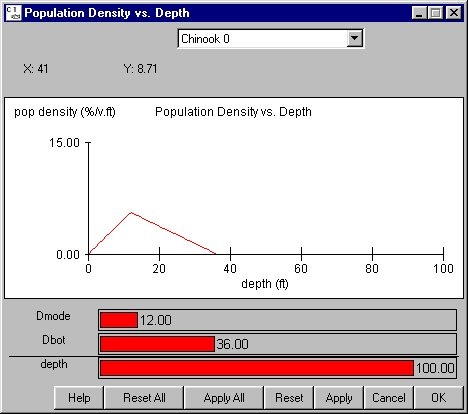

Population Density vs. Depth
Selecting Behavior Gas Mortality Equation opens companion windows, the Gas Mortality window and the Population Density vs. Depth window. These two windows are interrelated, and together define the mortality due to gas relationship. The average gas mortality for a reach is calculated by averaging over all gas levels in a reach and also using a fish depth distribution. There is roughly a three percent per foot compensation for every foot below the surface. The average is computed by multiplying the gas mortality equation by the fish depth distribution and integrating over the length and depth of the reach. The percent mortality per day for the reach is a flow-weighted average of the mortality in each flow.
Gas Mortality Equation opens companion windows, the Gas Mortality window and the Population Density vs. Depth window. These two windows are interrelated, and together define the mortality due to gas relationship. The average gas mortality for a reach is calculated by averaging over all gas levels in a reach and also using a fish depth distribution. There is roughly a three percent per foot compensation for every foot below the surface. The average is computed by multiplying the gas mortality equation by the fish depth distribution and integrating over the length and depth of the reach. The percent mortality per day for the reach is a flow-weighted average of the mortality in each flow.
The Population Density vs. Depth window uses three parameters to describe the depth profile for each stock modeled, where:
- Dmode: Modal depth, the most commonly used depth.
- Dbot: Deepest level at which a fish will swim.
- depth (display only): Depth of the pool.
This is an Equation Input window.

Population Density vs. Depth window